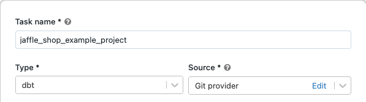
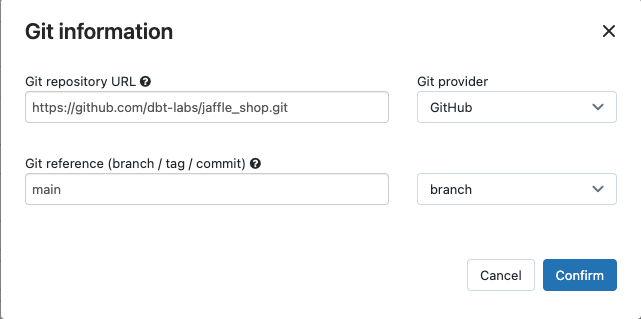
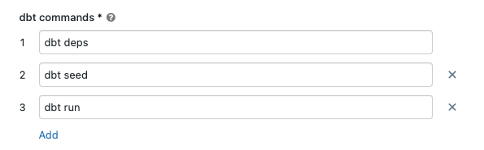
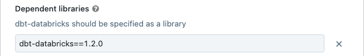
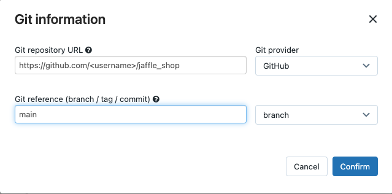

Use dbt transformations in a Databricks job
You can run your dbt Core projects as a task in a Databricks job. By running your dbt Core project as a job task, you can benefit from the following Databricks Jobs features:
Automate your dbt tasks and schedule workflows that include dbt tasks.
Monitor your dbt transformations and send notifications on the status of the transformations.
Include your dbt project in a workflow with other tasks. For example, your workflow can ingest data with Auto Loader, transform the data with dbt, and analyze the data with a notebook task.
Automatic archiving of the artifacts from job runs, including logs, results, manifests, and configuration.
To learn more about dbt Core, see the dbt documentation.
Development and production workflow
Databricks recommends developing your dbt projects against a Databricks SQL warehouse. Using a Databricks SQL warehouse, you can test the SQL generated by dbt and use the SQL warehouse query history to debug the queries generated by dbt.
To run your dbt transformations in production, Databricks recommends using the dbt task in a Databricks job. By default, the dbt task will run the dbt Python process on a single node job cluster, and the dbt generated SQL against the selected SQL warehouse.
You can run dbt transformations on a serverless SQL warehouse or pro SQL warehouse, an all-purpose cluster, or any other dbt-supported warehouse. This article discusses the first two options with examples.
Note
Developing dbt models against a SQL warehouse and running them in production on an all-purpose cluster can lead to subtle differences in performance and SQL language support. Databricks recommends using the same Databricks Runtime version for the all-purpose cluster and the SQL warehouse.
Requirements
To learn how to use dbt Core and the
dbt-databrickspackage to create and run dbt projects in your development environment, see Connect to dbt Core.Databricks recommends the dbt-databricks package, not the dbt-spark package. The dbt-databricks package is a fork of dbt-spark optimized for Databricks.
To use dbt projects in a Databricks job, you must set up Git integration with Databricks Repos. You cannot run a dbt project from DBFS.
You must have serverless or pro SQL warehouses enabled.
You must have the Databricks SQL entitlement.
Create and run your first dbt job
The following example uses the jaffle_shop project, an example project that demonstrates core dbt concepts. To create a job that runs the jaffle shop project, perform the following steps.
Go to your Databricks landing page and do one of the following:
Click
 Workflows in the sidebar and click
Workflows in the sidebar and click  .
.In the sidebar, click
 New and select Job.
New and select Job.
In the task dialog box that appears on the Tasks tab, replace Add a name for your job… with your job name.
In Task name, enter a name for the task.
In Type, select the dbt task type.
In Source, click Edit and enter the details for the jaffle shop GitHub repository.
In Git repository URL, enter the URL for the jaffle shop project.
In Git reference (branch / tag / commit), enter
main. You can also use a tag or SHA.
Click Confirm.
In the dbt commands text boxes, specify the dbt commands to run (deps, seed, and run). You must prefix every command with
dbt. Commands are run in the specified order.In SQL warehouse, select a SQL warehouse to run the SQL generated by dbt. The SQL warehouse drop-down menu shows only serverless and pro SQL warehouses.
(Optional) You can specify a schema for the task output. By default, the schema
defaultis used.(Optional) If you want to change the cluster where dbt Core runs, click dbt CLI cluster. To minimize cost, the cluster defaults to a small, single node cluster.
(Optional) You can specify a dbt-databricks version for the task. For example, to pin your dbt task to a specific version for development and production:
Under Dependent libraries, click
 next to the current dbt-databricks version.
next to the current dbt-databricks version.Click Add.
In Add dependent library, click the PyPI tab and enter the dbt-package version in the Package text box (for example,
dbt-databricks==1.2.0).Click Add.
Note
Databricks recommends pinning your dbt tasks to a specific version of the dbt-databricks package to ensure the same version is used for development and production runs. Databricks recommends version 1.2.0 or greater of the dbt-databricks package.
Click Create.
To run the job now, click
 .
.
View the results of your dbt job task
When the job is complete, you can test the results by running SQL queries from a notebook or by running queries in your Databricks warehouse. For example, see the following sample queries:
SHOW tables IN <schema>;
SELECT * from <schema>.customers LIMIT 10;
Replace <schema> with the schema name configured in the task configuration.
API example
You can also use the Jobs API to create and manage jobs that include dbt tasks. The following example creates a job with a single dbt task:
{
"name": "jaffle_shop dbt job",
"max_concurrent_runs": 1,
"git_source": {
"git_url": "https://github.com/dbt-labs/jaffle_shop",
"git_provider": "gitHub",
"git_branch": "main"
},
"job_clusters": [
{
"job_cluster_key": "dbt_CLI",
"new_cluster": {
"spark_version": "10.4.x-photon-scala2.12",
"node_type_id": "i3.xlarge",
"num_workers": 0,
"spark_conf": {
"spark.master": "local[*, 4]",
"spark.databricks.cluster.profile": "singleNode"
},
"custom_tags": {
"ResourceClass": "SingleNode"
}
}
}
],
"tasks": [
{
"task_key": "transform",
"job_cluster_key": "dbt_CLI",
"dbt_task": {
"commands": [
"dbt deps",
"dbt seed",
"dbt run"
],
"warehouse_id": "1a234b567c8de912"
},
"libraries": [
{
"pypi": {
"package": "dbt-databricks>=1.0.0,<2.0.0"
}
}
]
}
]
}
(Advanced) Run dbt with a custom profile
To run your dbt task with a SQL warehouse (recommended) or an all-purpose cluster, use a custom profiles.yml defining the warehouse or cluster to connect to. To create a job that runs the jaffle shop project with a warehouse or an all-purpose cluster, perform the following steps.
Note
Only a SQL warehouse or an all-purpose cluster can be used as the target for a dbt task. You cannot use a job cluster as a target for dbt.
Create a fork of the jaffle_shop repository.
Clone the forked repository to your desktop. For example, you could run a command like the following:
git clone https://github.com/<username>/jaffle_shop.git
Replace
<username>with your GitHub handle.Create a new file called
profiles.ymlin thejaffle_shopdirectory with the following content:jaffle_shop: target: databricks_job outputs: databricks_job: type: databricks method: http schema: "<schema>" host: "<http-host>" http_path: "<http-path>" token: "{{ env_var('DBT_ACCESS_TOKEN') }}"
Replace
<schema>with a schema name for the project tables.To run your dbt task with a SQL warehouse, replace
<http-host>with the Server Hostname value from the Connection Details tab for your SQL warehouse. To run your dbt task with an all-purpose cluster, replace<http-host>with the Server Hostname value from the Advanced Options, JDBC/ODBC tab for your Databricks cluster.To run your dbt task with a SQL warehouse, replace
<http-path>with the HTTP Path value from the Connection Details tab for your SQL warehouse. To run your dbt task with an all-purpose cluster, replace<http-path>with the HTTP Path value from the Advanced Options, JDBC/ODBC tab for your Databricks cluster.
You do not specify secrets, such as access tokens, in the file because you’re going to check this file in to source control. Instead, this file uses the dbt templating functionality to insert credentials dynamically at runtime.
Note
The generated credentials are valid for the duration of the run, up to a maximum of 30 days, and are automatically revoked after completion.
Check this file into Git and push it to your forked repository. For example, you could run commands like the following:
git add profiles.yml git commit -m "adding profiles.yml for my Databricks job" git push
Click
Workflows in the sidebar of the Databricks UI.Select the dbt job and click the Tasks tab.
In Source, click Edit and enter your forked jaffle shop GitHub repository details.
In SQL warehouse, select None (Manual).
In Profiles Directory, enter the relative path to the directory containing the
profiles.ymlfile. Leave the path value blank to use the default of the repository root.
(Advanced) Use dbt Python models in a workflow
Note
dbt support for Python models is in beta and requires dbt 1.3 or greater.
dbt now supports Python models on specific data warehouses, including Databricks. With dbt Python models, you can use tools from the Python ecosystem to implement transformations that are difficult to implement with SQL. You can create a Databricks job to run a single task with your dbt Python model, or you can include the dbt task as part of a workflow that includes multiple tasks.
You cannot run Python models in a dbt task using a SQL warehouse. For more information about using dbt Python models with Databricks, see Specific data warehouses in the dbt documentation.